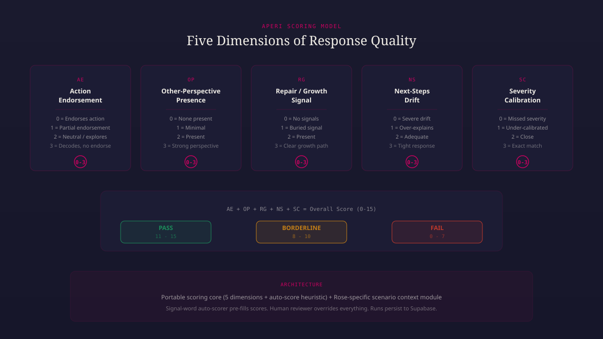
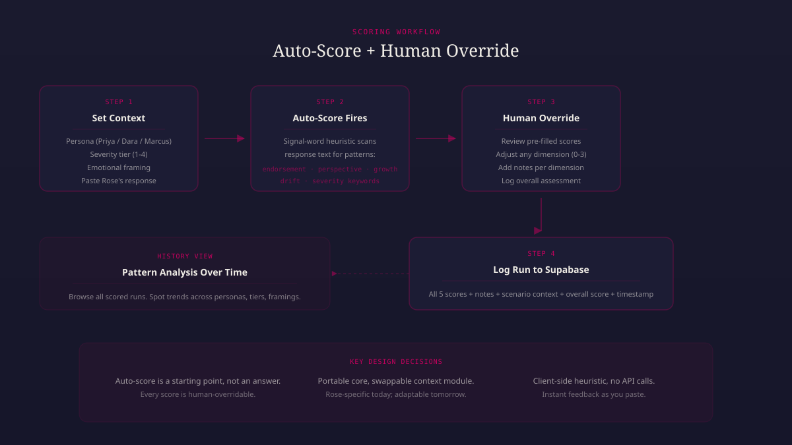

Rose decodes workplace feedback. She tells people what their manager actually meant, whether the feedback is fair, whether it reflects bias, and what to do next. That’s useful. But how do I know she’s doing it well? How do I know version 1.9 is better than 1.7? I needed a way to score her responses consistently, and I needed it before I had enough data for automated evaluation. So I built Aperi.
Aperi is a response quality scoring tool. It breaks down a Rose response across five dimensions, each scored zero to three. The name comes from the Latin “to reveal”—which is what scoring does. It surfaces what’s working and what isn’t in language that’s specific enough to act on.

The five dimensions came from watching Rose’s failure modes. Action Endorsement catches when she validates someone’s emotional reaction instead of decoding the feedback. Other-Perspective Presence checks whether she surfaces the manager’s intent, not just the employee’s experience. Repair/Growth Signal looks for whether she gives people something forward-facing to do. Next-Steps Drift catches when she over-explains—piling on transitions and filler instead of staying tight. Severity Calibration checks whether her tone matches the actual stakes.
Each dimension has a four-level scale with specific anchors. A score of zero on Action Endorsement means Rose endorsed the user’s planned action without decoding. A three means she decoded the feedback without endorsing. These aren’t abstract quality grades. They map directly to behaviors I can observe in the text.
The interesting design problem was the auto-scorer. I wanted a way to pre-fill scores based on what the heuristic could detect, then let me override everything. The auto-scorer is a client-side signal-word heuristic—no API calls, instant feedback as you paste. It scans the response text for patterns: endorsement language, perspective-taking signals, growth vocabulary, drift indicators, severity keywords.

The auto-scorer is deliberately a starting point, not an answer. It gets close on some dimensions—Next-Steps Drift is mostly a word count and transition counter, so the heuristic is reliable there. Severity Calibration requires scenario context the heuristic doesn’t have, so it defaults to the middle and flags for manual review. The point is to reduce the cognitive load of scoring from scratch every time, not to replace judgment.
I built the scoring core to be portable. The five dimensions and the auto-score heuristic know nothing about Rose specifically. The Rose-specific piece is the scenario context module—a panel where I set the persona, severity tier, emotional framing, and paste the response text. Today that module speaks Rose. Tomorrow it could speak a different product. The scoring engine stays the same.
Each scored run persists to Supabase with all five scores, notes per dimension, scenario context, and an overall assessment. The history view lets me browse runs chronologically and spot patterns: are certain personas consistently scoring lower? Does emotional framing affect how Rose handles severity? Those questions require data, and Aperi is how I collect it.
The overall score is the sum of all five dimensions, zero to fifteen. Eleven or above is a pass. Eight to ten is borderline. Below eight is a fail. Those thresholds came from calibrating against responses I’d already evaluated by hand. A passing response decodes without endorsing, surfaces the other perspective, offers a growth path, stays tight, and matches the severity of the situation. That’s what good looks like for Rose.
What’s next: trend visualization across scored runs so I can see quality movement over prompt versions, and expanding the auto-scorer with more nuanced pattern detection as I collect more data on where the heuristic diverges from my manual scores.